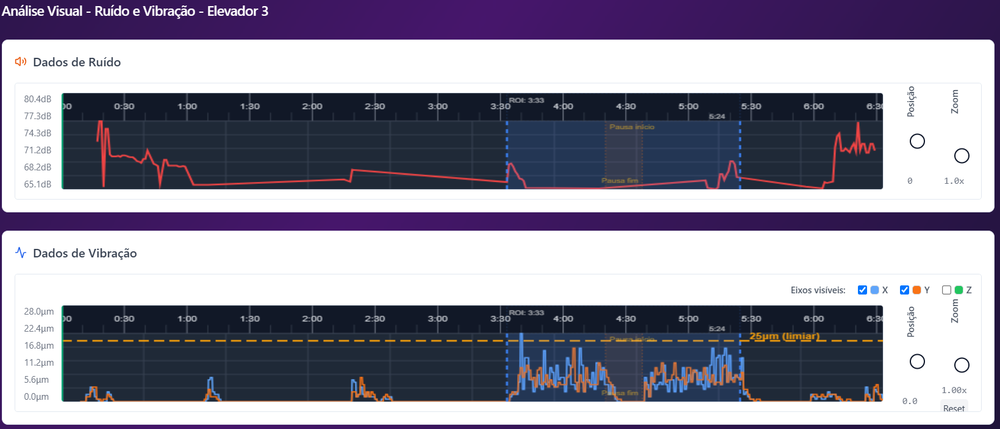

Atuamos onde a manutenção comum não identifica o problema. Realizamos uma "ressonância magnética" do seu elevador através de instrumentação de ponta, identificando a causa raiz de trepidações (ou vibrações), ruídos excessivos e desconforto de viagem, com documentação visual e técnica para respaldo jurídico e tomada de decisão.
Seu elevador treme, faz barulhos metálicos ou causa desconforto aos usuários? A empresa de manutenção diz que "é normal"? Com nossa tecnologia de análise espectral e inspeção 360°, você terá a verdade técnica documentada.
Trepidações durante a subida ou descida que causam insegurança e desconforto aos usuários.
Sons anormais que indicam desgaste, desalinhamento ou falhas mecânicas nos componentes.
Identificação de problemas em guias, polias, contrapesos e limitadores antes que resultem em falhas graves.
Auditoria técnica independente para verificação das ordens de serviço e avaliação de problemas persistentes.
Utilizamos um processo científico em 4 etapas para diagnosticar com precisão os problemas do seu elevador:
Instalação de sensores acelerômetros (detectores de vibração em 3 eixos: lateral, perpendicular e vertical) e decibelímetro calibrado (medidor de ruído/dB). Esses equipamentos capturam dados técnicos imperceptíveis ao olho humano.
Gravação com câmera 360° de alta resolução dentro da cabine e no poço do elevador. Isso permite correlacionar visualmente as falhas detectadas pelos sensores, mostrando contatos mecânicos, movimentos irregulares e origem dos ruídos.
Processamento dos dados através de software de análise espectral (FFT - Fast Fourier Transform) que identifica as frequências exatas das falhas. Geramos gráficos técnicos que demonstram os níveis de vibração nos três eixos (X, Y, Z) e os picos de ruído excessivo.
Entrega de relatório técnico assinado por Engenheiro Mecânico (com ART - Anotação de Responsabilidade Técnica) contendo: gráficos de análise, vídeos 360°, parecer conclusivo, identificação das causas raiz e recomendações de correção baseadas nas normas técnicas aplicáveis.
Veja abaixo um exemplo real dos gráficos gerados pela nossa análise. Os gráficos mostram os dados de ruído (dB) e vibração (movimentações laterais, perpendiculares e verticais) captados durante a operação do elevador.
Clique na imagem para ampliar

Gráfico de Ruído e Vibração - Eixos X, Y, Z
Legenda:
A grande inovação do nosso serviço está na inspeção visual imersiva. Enquanto análises convencionais dependem apenas de números e relatórios técnicos, nossa câmera 360° permite que você "entre" no elevador e veja exatamente o que está acontecendo.
Transparência Total: Não existe "caixa preta". Você verá em vídeo sincronizado com os gráficos de vibração:
Essa combinação de dados técnicos + evidência visual torna o diagnóstico irrefutável e facilita a tomada de decisão.
Auditoria técnica que evita a troca desnecessária de peças caras. Com o diagnóstico preciso, você investe apenas no que realmente precisa de intervenção, economizando milhares de reais em substituições indevidas.
Identificação precisa dos pontos causadores de trancos e barulhos que incomodam moradores. Com o diagnóstico correto, a empresa de manutenção saberá exatamente onde atuar para melhorar o conforto de uso.
Laudo assinado por Engenheiro Mecânico (com ART) comprovando as condições reais do equipamento e avaliação das manutenções realizadas. Documento com respaldo legal para processos, negociações com síndicos ou disputas com empresas de manutenção.
Análise crítica das ordens de serviço realizadas para averiguação de problemas persistentes. Identificamos se as manutenções estão sendo executadas corretamente e se os problemas reportados foram corretamente diagnosticados e registrados.
O cliente "vê" o problema através dos vídeos 360°, sem "caixa preta". Você terá acesso a evidências visuais claras que comprovam os apontamentos técnicos, facilitando o entendimento e a tomada de decisão.
Nossos laudos são elaborados com base nas principais normas técnicas do setor:
Se o seu elevador apresenta vibração excessiva, ruídos anormais ou desconforto na viagem, entre em contato conosco para uma análise diagnóstica completa.
Nossa equipe está pronta para fornecer uma solução técnica precisa e confiável para o seu problema.
Responsável Técnico:
Eng. Georgio Batista de Lima CREA (Engenheiro Mecânico) Tel/WhatsApp: +55 (62) 99285-2704 Email: lima.georgio.eng@gmail.com
Orçamento via WhatsApp